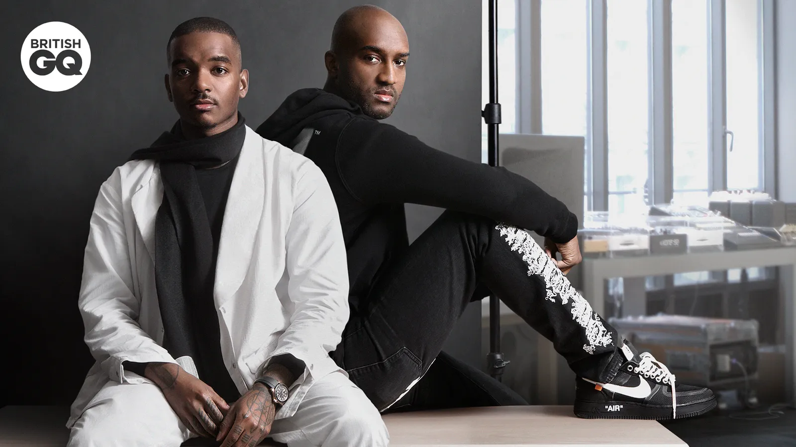
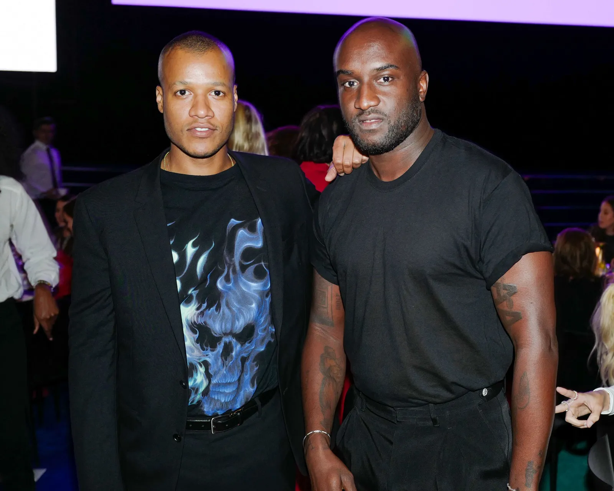

Virgil Abloh unió fuerzas con Takashi Murakami, uno de los artistas pop más reconocidos de Japón, para una serie de colaboraciones que llevaron su arte a nuevas dimensiones. Juntos, exploraron temas de identidad cultural, la apropiación y la estética del streetwear en exhibiciones visuales que combinaban la audacia de ambos artistas.
La colaboración dio lugar a obras únicas que combinaban los gráficos coloridos y personajes característicos de Murakami con la visión minimalista de Abloh, creando una fusión perfecta entre el arte pop y el lujo moderno. Este proyecto conjunto también fue una declaración sobre cómo el arte puede conectar culturas y generaciones distintas.
Colaboración con Samuel Ross

Samuel Ross, fundador de A-Cold-Wall* y protegido de Virgil Abloh, colaboró con él para redefinir el diseño industrial y la moda urbana. Juntos, exploraron las intersecciones entre la estética del trabajo industrial y el lujo accesible, creando piezas que desafiaban las normas tradicionales de la moda.
Esta colaboración destacó el enfoque mutuo de ambos diseñadores en crear moda con un trasfondo cultural y social, introduciendo texturas y patrones inspirados en la arquitectura urbana y el brutalismo. La influencia de Abloh ayudó a Ross a expandir su marca mientras ambos desdibujaban las líneas entre la moda de alta costura y el estilo de calle.
Colaboración con Heron Preston

Con Heron Preston, otro nombre importante en el diseño urbano, Virgil Abloh desarrolló un diálogo creativo que exploraba temas de sostenibilidad y experimentación con materiales. Juntos, impulsaron la idea de que el streetwear también podía abordar la ética y la responsabilidad social.
Su colaboración incluyó prendas y accesorios con un enfoque innovador en materiales reciclados y procesos sostenibles, reflejando un cambio en la industria hacia prácticas más responsables. La combinación de la visión estética de Preston con el enfoque experimental de Abloh resultó en piezas de ropa que trascendían la moda y ofrecían un mensaje más profundo.